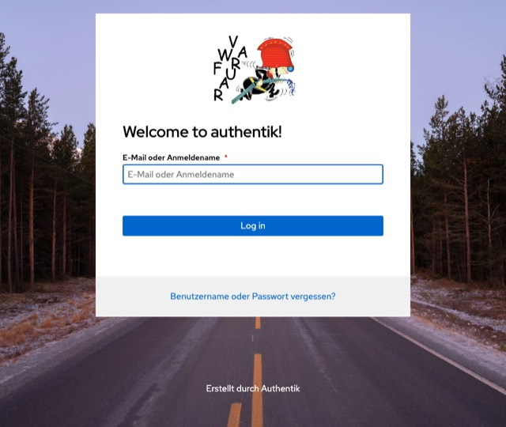

Auch beim ersten Mal
Der Verein hat nie Passwörter verschickt. Wer sich zum ersten Mal anmeldet, hat also gar keines — und geht genau denselben Weg wie jemand, der seines vergessen hat.
Der Knopf heisst zwar Passwort vergessen?. Er setzt aber ebenso gut ein erstes. Lass dich davon nicht abhalten: Wenn du noch nie drin warst, ist das hier dein Weg hinein.
Ein Passwort für alles
Für die Mitglieder-App und für Mein Bereich auf der
Website gilt dasselbe Konto. Mein Bereich ist nämlich
die Mitglieder-App selbst, nur im Browser. Das Konto liegt bei der
Anmeldestelle des Vereins unter auth.fwv-raura.ch. Dort
hängen auch die übrigen Dienste dran — Nextcloud, das Wiki, das
Vorstands-Portal.
Was du hier setzt, gilt also überall. Du musst das nirgends ein zweites Mal machen.
Der Vorstand muss dafür nichts tun. Es gibt zwei Wege, und beide führen zum selben Ergebnis — nimm den, der dir gerade näher liegt.
Mit Code: in der App oder in Mein Bereich
Der kürzere Weg. Er geht in der Mitglieder-App auf dem Telefon und genauso in Mein Bereich auf der Website — dort erscheint dieselbe Anmeldung. Du bekommst einen Code per E-Mail, und am Ende bist du gleich angemeldet.
- Die Mitglieder-App öffnen. Oder auf
www.fwv-raura.chauf Mein Bereich klicken. - Auf der Anmeldung ist der Reiter Mitglied gewählt. Unter dem Knopf Mit Vereinskonto anmelden steht Passwort vergessen? — antippen.
- Es öffnet sich «Passwort zurücksetzen». Bei E-Mail die Adresse eingeben, die der Verein von dir hat, und Code anfordern drücken.
- In den Posteingang schauen. In der E-Mail steht ein sechsstelliger Code.
- Zurück auf «Passwort zurücksetzen»: Den Code bei Code aus der E-Mail eintippen. Dann das neue Passwort bei Neues Passwort und nochmals bei Wiederholen eingeben.
- Passwort setzen drücken.

Danach bist du direkt angemeldet. Mit demselben Passwort meldest du dich auch überall sonst an — über Mit Vereinskonto anmelden.
Mit Link: über die Anmeldeseite
Wenn du auf Mit Vereinskonto anmelden drückst, erscheint die Anmeldeseite des Vereins. Auch dort lässt sich das Passwort setzen — diesmal mit einem Link statt eines Codes.
- In der App oder in Mein Bereich auf Mit Vereinskonto anmelden drücken. Es erscheint die Anmeldeseite des Vereins.
- Ganz unten steht Benutzername oder Passwort vergessen? — anklicken.
- Die E-Mail-Adresse eingeben, die der Verein von dir hat, und Continue drücken.
- In den Posteingang schauen. Der Link in der E-Mail führt auf eine Seite, auf der du ein neues Passwort setzt.
- Zurück zur Anmeldung und mit dem neuen Passwort anmelden.
Die Seite lässt sich auch direkt aufrufen:
auth.fwv-raura.ch/if/flow/password-recovery/


Andere Passwörter: die Zugänge
Manche Ämter bringen eigene Passwörter mit — etwa für ein
Funktions-Postfach wie aktuar@fwv-raura.ch, für das
Netzlaufwerk oder für ein geteiltes Konto. Das sind
nicht die Passwörter deines Vereinskontos. Du findest
sie in der App und in Mein Bereich.
- In der App oder in Mein Bereich auf Profil gehen.
- Unter «Konto» auf Zugänge tippen.
- Ein Passwort ist zuerst verdeckt. Das Auge zeigt es an, das Symbol daneben kopiert es — auch ohne Aufdecken.
Passwort eines Funktions-Postfachs ändern
Bei jedem Funktions-Postfach steht Passwort ändern. Das neue Passwort muss mindestens zwölf Zeichen haben. Zweimal eingeben und Passwort setzen drücken.

Wenn es nicht klappt
Es kommt keine E-Mail
Zuerst im Spam-Ordner nachsehen — Nachrichten von der Anmeldestelle landen dort gern. Warte ausserdem ein paar Minuten; der Versand ist nicht immer sofort.
Kommt danach nichts an, ist unter dieser Adresse vermutlich kein Konto hinterlegt. Häufigster Grund: Der Verein hat eine andere Adresse von dir als die, die du eingegeben hast. Dann hilft der Aktuar weiter.
Der Link aus der Willkommens-E-Mail geht nicht mehr
Solche Links laufen nach einiger Zeit ab — das ist kein Fehler, sondern Absicht. Nimm einfach einen der beiden Wege oben; sie lassen sich beliebig oft benutzen.
Ich weiss meinen Benutzernamen nicht
Du brauchst ihn nicht. Für das Zurücksetzen genügt die E-Mail-Adresse, und anmelden kannst du dich damit ebenfalls.
Das neue Passwort wird nicht angenommen
Es muss mindestens acht Zeichen haben. Zu einfache Passwörter — der
eigene Name, 12345678 — weist die Anmeldestelle ebenfalls
ab. Ein Satz, den du dir merken kannst, ist die einfachste sichere
Lösung.
Ich bin kein Mitglied, sondern organisiere einen Anlass
Dann gilt diese Anleitung nicht für dich. Tippe auf der Anmeldung auf Externer Organisator? Hier anmelden und nimm die E-Mail-Adresse und das Passwort, die du für deinen Anlass bekommen hast.
Wo finde ich diese Anleitung wieder?
In der App und in Mein Bereich: auf dem Telefon unter Mehr, Abschnitt «Hilfe». Auf einem breiten Bildschirm steht «Hilfe» links in der Seitenleiste. Dort sind alle vier Anleitungen verlinkt.
Ich komme trotzdem nicht rein
Melde dich beim Aktuar unter aktuar@fwv-raura.ch. Er
kann prüfen, welche Adresse hinterlegt ist, und den Zugang neu
aufsetzen.